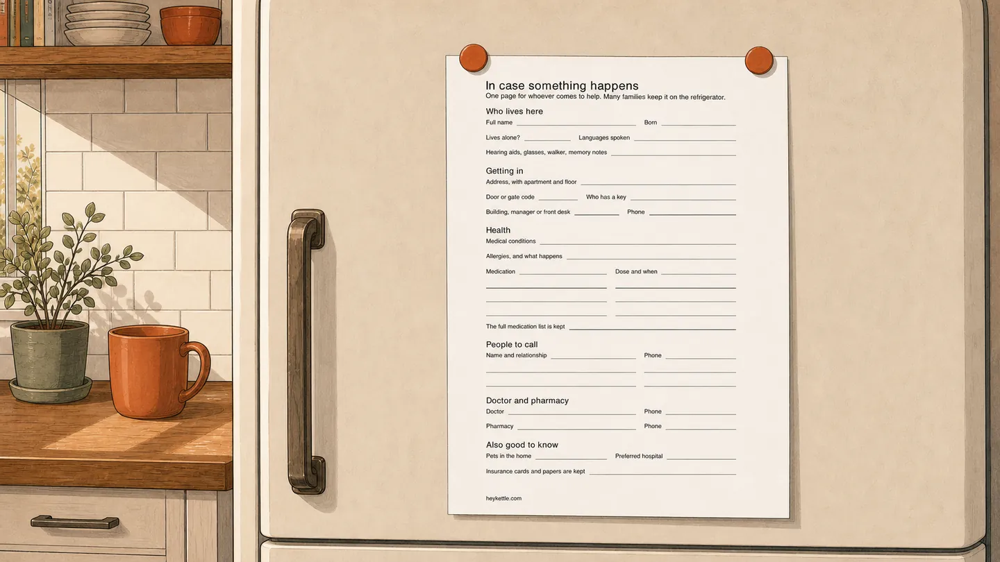

The information you'll wish you had
There's a moment that repeats in almost every story I've heard about a parent's emergency, and it isn't the fall or the ambulance. It's later that evening, in a hospital corridor or on the phone from another country, when somebody official asks a simple question, what does she take, who is her doctor, what's the policy number, and the family realizes that nobody in the room knows, and the one person who knows is the person on the trolley.
Nothing about that moment is made better by having worried more. All of it is made better by having written things down earlier. So here is the list, gathered from a lot of those stories, of what to have before you need it.
The first-hour information
This is what gets asked while things are still happening, and it's the short list. Their full name, date of birth, and address, with the apartment, the floor, the door code. Whether they live alone. Their medical conditions, in plain words. Their medicines, with doses, and their allergies. Their doctor and their pharmacy, with numbers. Who has a key. Whether there's a pet that will be alone in the house tonight.
It fits on one page, and it should live on one page rather than in your head, because on the day, your head will be busy. We made a free fillable sheet that holds exactly this, one copy on their refrigerator for whoever comes to help, one copy with you for when you're the one answering questions from far away.

The first-week information
Once the first hours are over, a second layer of questions starts, and this is the layer that catches families out, because none of it feels like emergency information until it is. The insurance details, and where the actual cards and papers are. How the household runs: which bills are on autopay, which arrive on paper, what would bounce or lapse if a month went unattended. The names on the accounts. Where the important documents live, and, just as usefully, a note of what doesn't exist, so nobody spends a frantic week hunting for a policy that was never taken out.
Then there's the phone. So much of a person's life now routes through a locked phone, contacts, banking, the two-step codes other logins depend on, that a parent's phone nobody can open becomes a wall at the worst time. This one is genuinely delicate, and it is not a thing to spring on anyone. But it's a conversation worth having while everyone's well: what should happen, and what would they want, if they couldn't unlock it themselves for a while.
The permission layer
Information is only half of it. In a longer emergency, someone may need the standing to act, to talk to the insurer, to pay the bills from their account, to be told things by the hospital. The names for these vary by country and state, powers of attorney, healthcare proxies, and this isn't legal advice; the specifics belong with someone qualified where your parents live. The part that is universally true: every family that sorted this out did it before the emergency, because afterwards is often too late, and the ones who hadn't spent the worst weeks of their lives on paperwork they couldn't complete.
Where it all lives
Three rules cover most of it. The first-hour page goes where it can be seen: theirs on the refrigerator, yours wherever you'd grab in a hurry, including a photo of it on your phone. The first-week layer goes in one named place, a folder, a binder, a drawer, that at least two people can name from memory. And all of it gets a date, because the most dangerous version of this file is the one that's three years stale and looks fine.
If you do nothing else this month, do the one page. It's ten minutes with your parent on a calm afternoon, and it converts the worst hour of a bad day into a series of questions you can actually answer. The normal-day sheet makes a good companion to it, for the quieter question of knowing what usual looks like before anything changes.
I built HeyKettle for the days when nothing is wrong, a short note each morning and evening that my parents' day looks normal, asking nothing of them. This page is for the other days. Both are easier to live with when they're ready in advance.